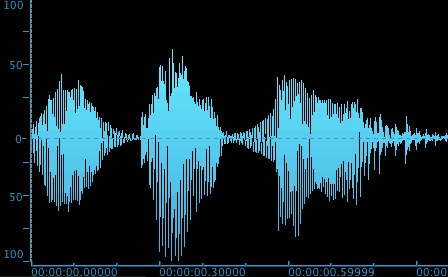
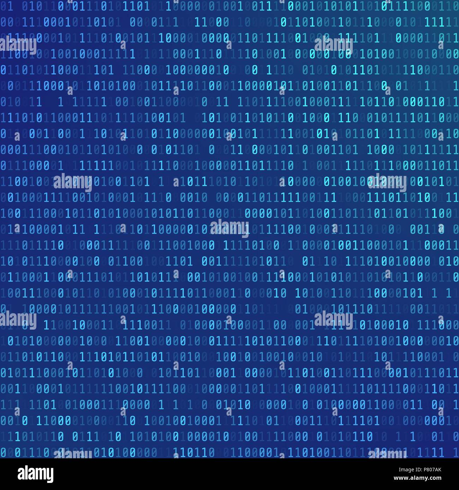

Bit e Pixel

Bit:
- Un bit è l'unità fondamentale di informazione nei computer, capace di assumere solo due valori: 0 o 1.
- Combinando più bit, si possono rappresentare informazioni più complesse. Ad esempio:
- 1 bit può rappresentare 2 valori (0 o 1).
- 2 bit possono rappresentare 4 valori (00, 01, 10, 11).
- 8 bit formano un byte, che può rappresentare 256 valori diversi.
Pixel:
- Un pixel è l'unità più piccola di un'immagine digitale.
- Ogni pixel è definito da una combinazione di bit che ne determina il colore.
Profondità del Colore
La profondità del colore indica il numero di bit utilizzati per rappresentare il colore di un singolo pixel. Maggiore è la profondità del colore, più colori possono essere visualizzati.
- 1-bit (Monocromatico): Può rappresentare solo 2 colori, di solito bianco e nero.
- 8-bit: Può rappresentare 256 colori.
- 16-bit: Può rappresentare 65.536 colori.
- 24-bit (True Color): Può rappresentare circa 16,7 milioni di colori, utilizzando 8 bit per ciascun canale di colore (rosso, verde, blu).
- 32-bit: Simile al 24-bit, ma con un canale aggiuntivo per la trasparenza (canale alpha).
Codifica delle Immagini
Quando un'immagine viene codificata, ogni pixel è rappresentato da una combinazione di bit che definisce il suo colore.
Esempio di Codifica RGB:
- In un'immagine a 24 bit, ogni pixel è rappresentato da tre canali di 8 bit, uno per ogni colore primario (rosso, verde, blu).
- Ad esempio, un pixel rosso puro può essere rappresentato come:
- Rosso: 255 (11111111 in binario)
- Verde: 0 (00000000 in binario)
- Blu: 0 (00000000 in binario)
Esempio di Codifica PNG:
- In un'immagine PNG a 32 bit, i primi 24 bit definiscono il colore RGB del pixel, mentre gli ultimi 8 bit rappresentano il canale alpha per la trasparenza.
| IMMAGINE | RISOLUZIONE | PROFONDITÀ | OCCUPAZIONE MEMORIA |
|---|---|---|---|
| B/N | 1024×740 | 1 | 1024×740×1 bit |
| GRIGIO | 1024×740 | 8 | 1024×740×8 bit |
| RADIO | 1024×740 | 16 | 1024×740×16 bit |
| COLORE (RGB) | 1024×740 | 24 | 1024×740×24 bit |
| COLORE AQ | 1024×740 | 48 | 1024×740×48 bit |
codifiche vettoriale
La codifica vettoriale dell'immagine è un metodo utiizzato per rappresentare le immagine attaverso elemnti geometrici come punti, linee, curve, poligoni. Le caratterestiche principali della codfica vettoriale sono:- 1-Scalabilità: Le immagini vettoriali possono essere scalate a qualsiasi dimensione senza perdita di qualità.
Questo perché sono basate su formule matematiche e non su pixel.
- 2-File di dimensioni ridotte: I file vettoriali tendono ad essere meno pesanti rispetto ai file raster,
soprattutto per immagini con aree estese di colore uniforme.
- 3-Modificabilità: Gli elementi delle immagini vettoriali possono essere facilmente modificati senza influenzare
l'intera immagine. Ogni elemento è indipendente.
- SVG (Scalable Vector Graphics)*: Un formato di file molto popolare e basato su XML.
- EPS (Encapsulated PostScript)*: Utilizzato soprattutto per la stampa.
- PDF (Portable Document Format)*: Può contenere sia grafica vettoriale che raster.
Audio

Video
Il video è la sequenza di immagine proittata di una velocità Fps(fream per secondi) che viene visualizzata sullo schermo.
La celocit normale dell'occhio è di 30Fps , ma anche può essere proiettato a 60Fps, 120Fps ma sarà molo veloce da vedere.
La risoluzione del video è la stessa della risoluzione dell'immagine, ma aggingiamo la velocità per secodi.
occ1= Risoluzione×profondità×velocità×secondi == Bit
occ2=occ1/8 == Byte
occ3=occ2/2^10 == KB
ecc.
Nel mondo digitale di oggi, la codifica video gioca un ruolo fondamentale nelle comunicazioni e nella distribuzione dei contenuti.
Questo processo complesso, che comprende la compressione e decompressione dei file video,
permette di trasmettere e archiviare video
in modo efficiente senza compromettere la qualità.
I file video grezzi sono notoriamente pesanti, e la loro trasmissione senza compressione
richiederebbe una larghezza di banda insostenibile.
La codifica riduce le dimensioni dei file video, rendendo possibile lo streaming e il download rapidi,
migliorando così l'esperienza dell'utente.
Uno degli standard di codifica video più comuni è H.264, conosciuto anche come AVC (Advanced Video Coding).
Questo standard è apprezzato per la sua efficienza nella compressione e la qualità che offre.
Con l'evoluzione della tecnologia e l'aumento della domanda
di contenuti video ad alta risoluzione, sono emersi nuovi standard come H.265 o HEVC (High Efficiency Video Coding),
che forniscono una compressione ancora più efficace,
riducendo ulteriormente le dimensioni dei file senza compromettere la qualità visiva.
La codifica video non riguarda solo l'efficienza della trasmissione,
ma anche la sicurezza. Attraverso tecniche di cifratura, i dati video possono essere protetti da accessi non autorizzati, garantendo la privacy e
la sicurezza delle informazioni trasmesse.
Questo è particolarmente importante in applicazioni come le videoconferenze, la sorveglianza e la trasmissione di
contenuti sensibili.
Una compressione video efficiente non solo migliora l'usabilità, ma ha anche un impatto positivo sull'ambiente. Riducendo il consumo di
energia e le risorse necessarie per la trasmissione e l'archiviazione dei dati, la codifica video contribuisce a un uso più sostenibile delle risorse tecnologiche.
La codifica del video è un aspetto fondamentale che sostiene il nostro mondo digitale attuale.
Grazie ai costanti progressi in questo settore, possiamo fruire di contenuti video di alta qualità in modo veloce, sicuro e sostenibile.
Investire nella ricerca e nello sviluppo di nuove tecniche di codifica sarà cruciale per affrontare le sfide future e assicurare un'esperienza
utente sempre più soddisfacente.
Numeri (interi e reali)

I codifiche dei numeri possono essere di tre tipi:
- Interi posetivi +
- Interi posetivi/negativi +/-
- Reali
La celocit normale dell'occhio è di 30Fps , ma anche può essere proiettato a 60Fps, 120Fps ma sarà molo veloce da vedere.
La risoluzione del video è la stessa della risoluzione dell'immagine, ma aggingiamo la velocità per secodi.
occ1= Risoluzione×profondità×velocità×secondi == Bit
occ2=occ1/8 == Byte
occ3=occ2/2^10 == KB
ecc.
Nel mondo digitale di oggi, la codifica video gioca un ruolo fondamentale nelle comunicazioni e nella distribuzione dei contenuti. Questo processo complesso, che comprende la compressione e decompressione dei file video, permette di trasmettere e archiviare video in modo efficiente senza compromettere la qualità. I file video grezzi sono notoriamente pesanti, e la loro trasmissione senza compressione richiederebbe una larghezza di banda insostenibile. La codifica riduce le dimensioni dei file video, rendendo possibile lo streaming e il download rapidi, migliorando così l'esperienza dell'utente. Uno degli standard di codifica video più comuni è H.264, conosciuto anche come AVC (Advanced Video Coding). Questo standard è apprezzato per la sua efficienza nella compressione e la qualità che offre. Con l'evoluzione della tecnologia e l'aumento della domanda di contenuti video ad alta risoluzione, sono emersi nuovi standard come H.265 o HEVC (High Efficiency Video Coding), che forniscono una compressione ancora più efficace, riducendo ulteriormente le dimensioni dei file senza compromettere la qualità visiva. La codifica video non riguarda solo l'efficienza della trasmissione, ma anche la sicurezza. Attraverso tecniche di cifratura, i dati video possono essere protetti da accessi non autorizzati, garantendo la privacy e la sicurezza delle informazioni trasmesse. Questo è particolarmente importante in applicazioni come le videoconferenze, la sorveglianza e la trasmissione di contenuti sensibili. Una compressione video efficiente non solo migliora l'usabilità, ma ha anche un impatto positivo sull'ambiente. Riducendo il consumo di energia e le risorse necessarie per la trasmissione e l'archiviazione dei dati, la codifica video contribuisce a un uso più sostenibile delle risorse tecnologiche. La codifica del video è un aspetto fondamentale che sostiene il nostro mondo digitale attuale. Grazie ai costanti progressi in questo settore, possiamo fruire di contenuti video di alta qualità in modo veloce, sicuro e sostenibile. Investire nella ricerca e nello sviluppo di nuove tecniche di codifica sarà cruciale per affrontare le sfide future e assicurare un'esperienza utente sempre più soddisfacente.
I codifiche dei numeri possono essere di tre tipi:
- Interi posetivi +
- Interi posetivi/negativi +/-
- Reali
vai alla pagina indice Torna all'inizio